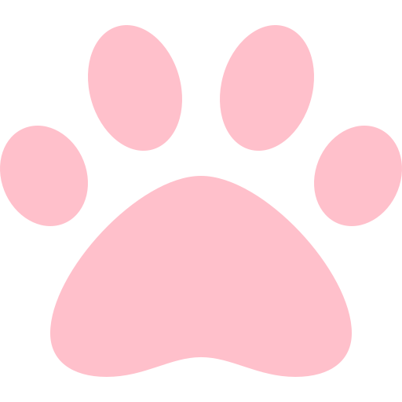

<mat-drawer-container class="primary content mat-app-background" autosize>
  <mat-drawer #drawer class="primary" mode="side">
    <mat-list>
      <mat-list-item>
        <button mat-button routerLink="dashboard" routerLinkActive="isActive">Home</button>
      </mat-list-item>
      <mat-list-item>
        <button mat-button routerLink="contact" routerLinkActive="isActive">Contact</button>
      </mat-list-item>
      <mat-list-item>
        <button mat-button routerLink="upload" routerLinkActive="isActive">New Animal</button>
      </mat-list-item>

      <mat-list-item>
        <div class="toggle-div">
          <mat-icon>brightness_5</mat-icon>
          <mat-slide-toggle [formControl]="toggleControl"></mat-slide-toggle>
          <mat-icon>bedtime</mat-icon>
        </div>
      </mat-list-item>
    </mat-list>
  </mat-drawer>

  <mat-toolbar color="primary">
    <button type="button" mat-button (click)="drawer.toggle()" mat-icon-button class="example-icon"
            aria-label="Example icon-button with menu icon">
      <mat-icon>menu</mat-icon>
    </button>
    <span class="logo"> </span>
    <span class="logo-text example-spacer">OpenPaws</span>

    <button mat-raised-button
            style="margin-right: 10px"
            class="mat-primary"
            matTooltip="{{tooltip}}"
            aria-label="Button that displays a tooltip when focused or hovered over">
      <mat-icon>info</mat-icon>
    </button>
    <button mat-icon-button class="example-icon favorite-icon" aria-label="Example icon-button with heart icon">
      <a class="links" href="https://github.com/"></a>
    </button>
    <button mat-icon-button class="example-icon" aria-label="Example icon-button with share icon">
      <a class="links" href="https://twitter.com/home"></a>
    </button>
  </mat-toolbar>
  <router-outlet></router-outlet>
</mat-drawer-container>

